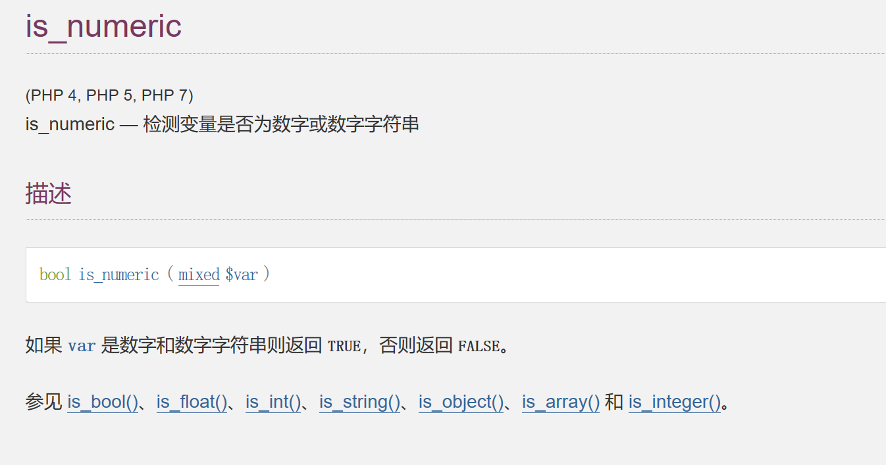
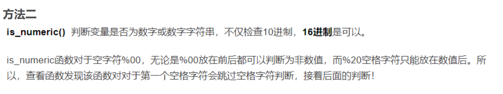
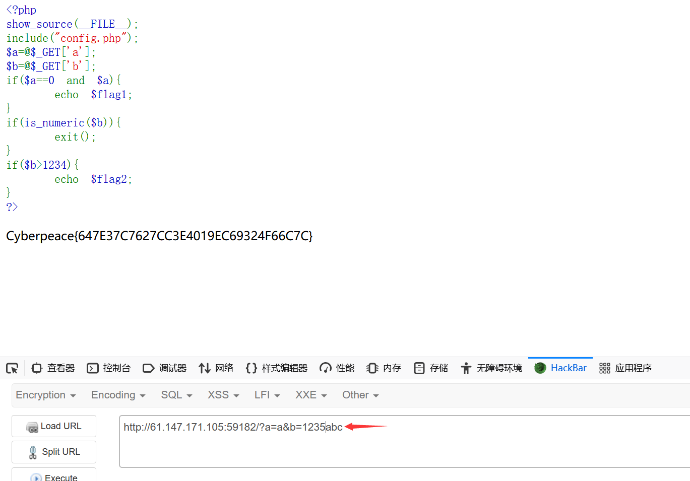

攻防世界-simple_php
文章发布时间:
最后更新时间:
文章总字数:
预计阅读时间:
最后更新时间:
文章总字数:
473
预计阅读时间:
1 分钟
题目描述：
小宁听说php是最好的语言,于是她简单学习之后写了几行php代码。
题目解题：
打开页面后，发现简单的PHP代码，开始审计
1 | |
如上代码我们可以发现，如果’a==0‘为true，但a本身不是0，则输出一部分flag，接下来判断b，如果b不是数字，且b大于1234，则输出剩下部分的flag
首先a是一个弱类型比较，而比较有如下情况
1 | |
那很明显我们令a=a即可绕过
针对b利用的是is_numeric函数特性

方法一
利用数组+十六进制来进行绕过，此方法由于is_numeric函数不能处理数组，那么该函数会返回false
1 | |
方法二

1 | |
方法三
php中当一个其他数据类型和数值类型的数据比较大小时，会先将其他数据类型转换成数值类型，这里输入类似9999a数据也可绕过
1 | |
此函数若是在sql注入中碰到也可以用16进制来绕过，将sql语句转为16进制字符串即可
如下图成功得到flag
